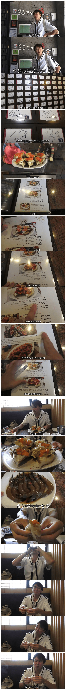


암컷이 되어버리긴 한듯
나도 우리엄마가 보내준 간장게장 맛드는거 기다리고있음
저자식 섹스를 하고있네
끝내 절정으로 가버리네...
카지노에도 돈 겁나 따더라
간장새우 일본음식 아니었음???
간장게장 응용 음식인데 그럴리가 ㅋㅋ
천하제일 게장 축제 이런거 나오면 방문객 많을까?
게장이 호한테는 씹극혼데 불호면 씹불호도 있는데다 알러지문제도 있고 쉽지 않을걸 ㅋㅋ
근데 난 극 호임
그렇네.. 있었으면
맛집 초스피드로 찾아서 매번 그집꺼 사먹을텐데 아쉽네.
찾아보니 인천과 안면도에서 "꽃게" 축제는 있더라
단체 식중독...
감...
사실 저기가기전 강원랜드에서 5배불려가서 존나 맛있게 먹었을듯ㅋㅋㅋ
간장게장 한번도 안먹어 봤는데 다음에 한국가면 먹어봐야되나? 진짜 저정도로 맛있음?
내가 비린거 진짜 싫어 하는데
저기 프로간장게장 55000원시절 한입먹어보고
아 이래서 간장게장 먹는구나 하는거 느낌
나도 해산물 먹기전에 맨날 기대하다가
매번 실망만 하는데
너말믿고 도전해볼까
나는 양념게장은 잘 먹는데 간장은 잘 못먹겠드라 호불호 갈릴듯
일본인들이 환장할 수 밖에 없는 조합이라서 그렇다더라
간장 양념 + 해산물 + 날거 + 흐물흐물 = 극락
내 경험상 양념게장이 저점이 높고 고점이 낮고, 반대로 간장게장이 고점이 좆됨 ㅋㅋ
취향에 맞으면 극락, 안맞으면 최악이 될 수 있는 음식임.
날 음식에 거부감이 없고, 미식에 관심이 있고, 재료 본연의 감칠맛에 관심이 있는 사람이라면 싫어하기 쉽지 않은 음식임.
그리고 식감이 거의 없는 음식이기 때문에 이 부분도 거부감 있으면 쉽지 않은 음식이고.
난 비린거 절대 못먹는데 게장 한마리까지 비린맛 견디고 먹을 수 있을정도로 존맛임
일본인이 사랑하는 재료와 식감 요리법까지 완벽함
한 십년된 영상아냐?? ㅋ
푸드섹서 ㄷㄷㄷ
저거 신사역에 있는 그건가?
딱한번 가본적 있는데

간장게장은 진짜 섹스란거임
날음식 좋아하고 간장 좋아하는 일본인 입장에선 ㄹㅇ 그냥 홍콩행이지
게 알러지 있는데 약먹고 먹는 양반..;.
결국 본인이 게장 만드는 영상만 10개는 만든 양반...
결국 작년에 일본 스시체인점이랑 협업해서 간장새우 초밥 메뉴에 올린 양반.
가무사하무니다
카네코 이사람 쿨돌때마다 게장 만드는데, 갈수록 재료들이 한국산 원재료로 조금씩 바뀌어가는게 종나 웃김
원래는 일본 대체품들이었는데ㅋㅋㅋ
ㅈㄴ비싼데 퀄리티가남다르네 ㅋㅋ
존나비싸네시벌....
가버렷다길래 돈안내고갓다는줄 ㅋㅋㅋㅋ
가격은 창렬인데
....
비싸긴 ㅈㄴ 비싸네
근데 제철이 아닐때 원재료 수급은 어떻게 해? 급냉 시켜도 저런 퀄리티가 나오나?
꽃게는 무조건 냉동인걸로 알고 있음
위고비로 밥 반공기도 못먹던 여동생이 엄마가 간장게장 해주니까 한그릇 반을 먹더라 ㅋㅋㅋㅋㅋㅋ
내가 비린거 못먹는데 환상을 가진 음식이
간장게장 성게알 연어알인데
성게알은 요번에 좋은데서 먹으니 먹을만 했고
연어알이랑 간장게장은 아직 신선한거 못먹어봄
저런 비싼곳은 나도 먹을수 있으려나
난 원래 초밥 좋아했는데 오마카세가서 성게알 처음먹고 비행기에서 다 토한이후로 초밥마저 싫어져버림
혹시 멀미인가 싶어서 다른데서 또 시도해봤는데 또 토한거보면 성게알이 걍 몸에 안맞는거같더라
살면서 상하거나 아픈것도 아닌데 음식먹고 토한적이 처음임
일본엔 왜 간장게장이 없었을까
일본 게는 크고 비싸다더라고
ㅋㅋㅋㅋ마지막 표정이랑 대사가 진짜 찰떡이라 개웃기네ㅋㅋㅋ
어흐
이자식 눈이 가버렸는데 ㅋㅋㅋㅋㅋㅋㅋㅋㅋㅋㅋㅋ
비리고 짭짤하고 물컹한 식감이라 확실히 일본인들 환장할듯
프로간장게장 진짜 맛있다. 가격이랑 구성품같은거 고려 안하고 오로지 맛으만 보면 대한민국 1등이라고 봄.
와 씨 유부녀로 보고 들어왔는데